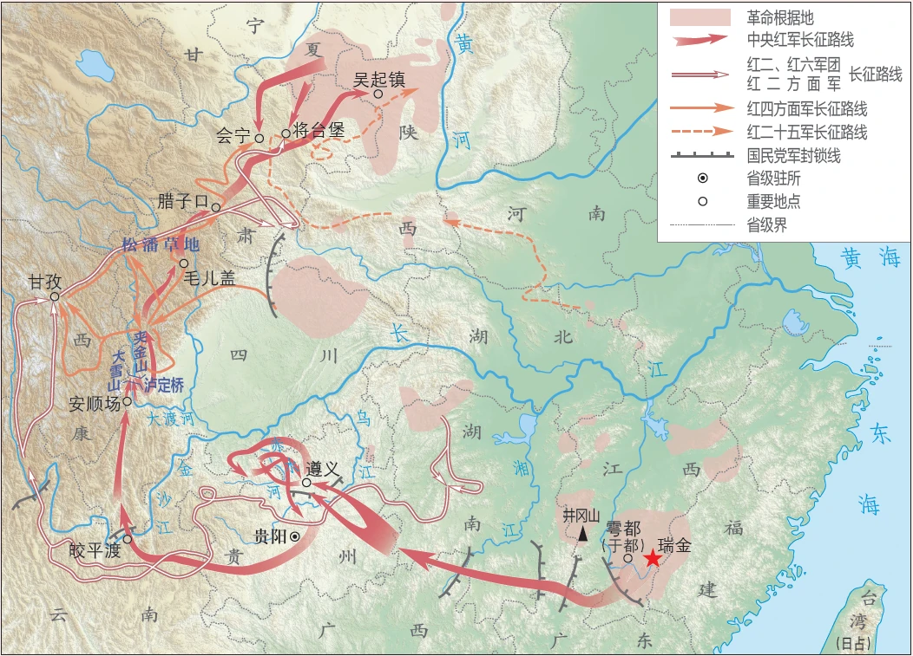
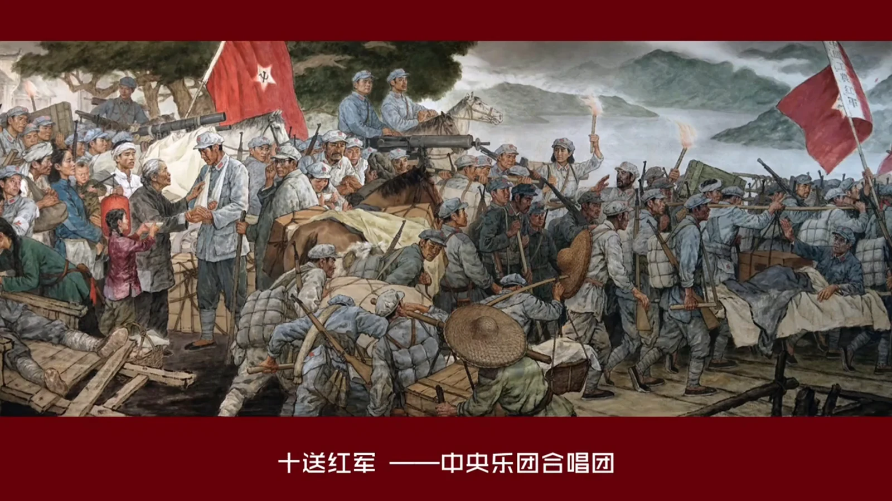

一、长征的意义
- 粉碎了国民党反动派消灭红军的企图
- 保存了党和红军的基干力量，使中国革命转危为安
- 播下了革命种子，铸就了长征精神，打开了中国革命的新局面
统编版 · 八年级历史上册 · 第五单元
第 15 课 · 从国共合作到农村革命根据地的建立
剧情推进 · 答题闯关 · 三维现场旁听会议

单衣爬雪山，绝粮过草地——支撑红军的是革命信仰。
按时间先后，依次点击下面的卡片（共 8 项）。
“每一代人有每一代人的长征路，每一代人都要走好自己的长征路。”
今天，我们这一代人的长征，就是实现“两个一百年”奋斗目标、实现中华民族伟大复兴的中国梦。

正在准备课件…